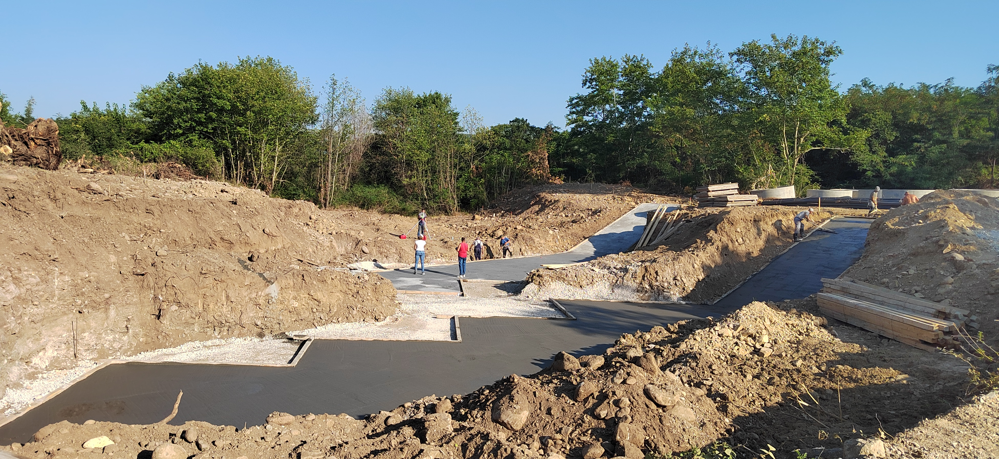
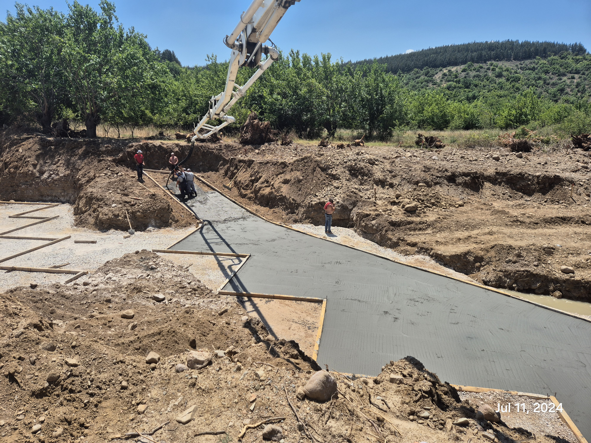
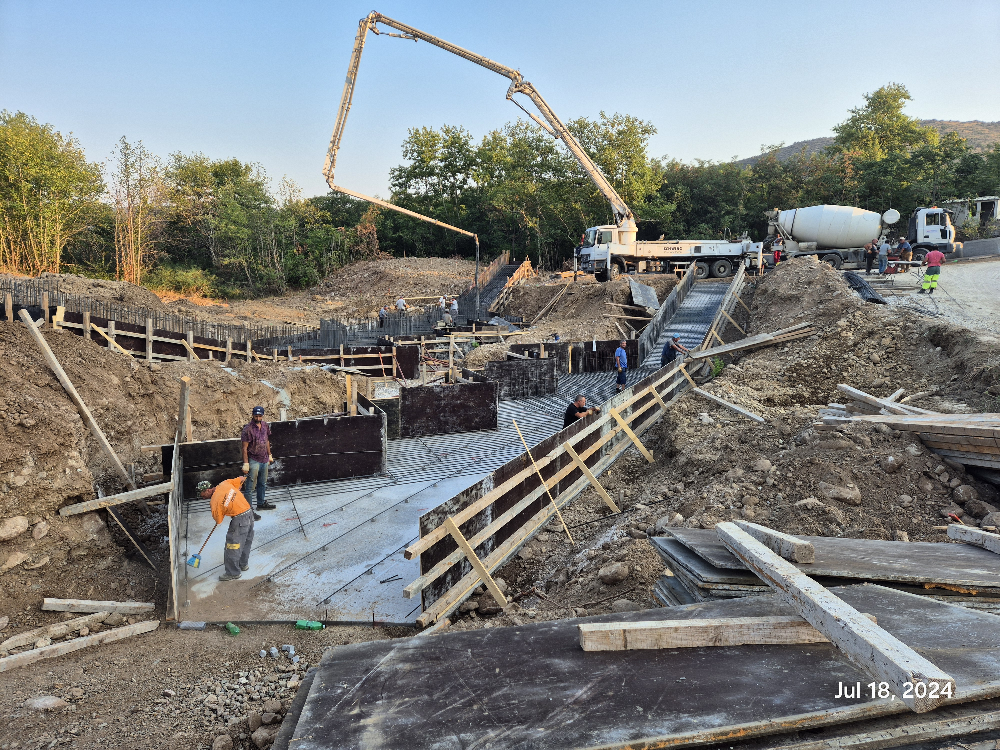
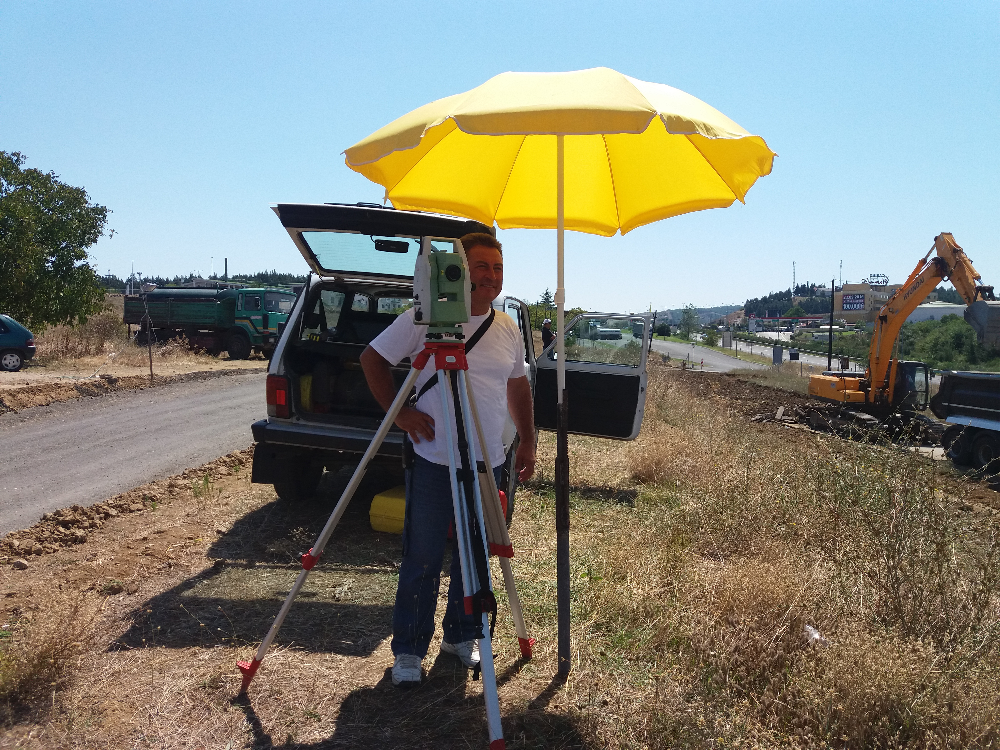
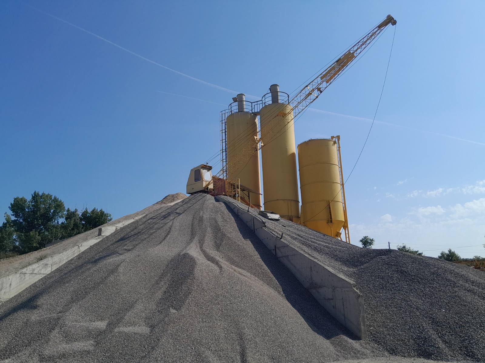
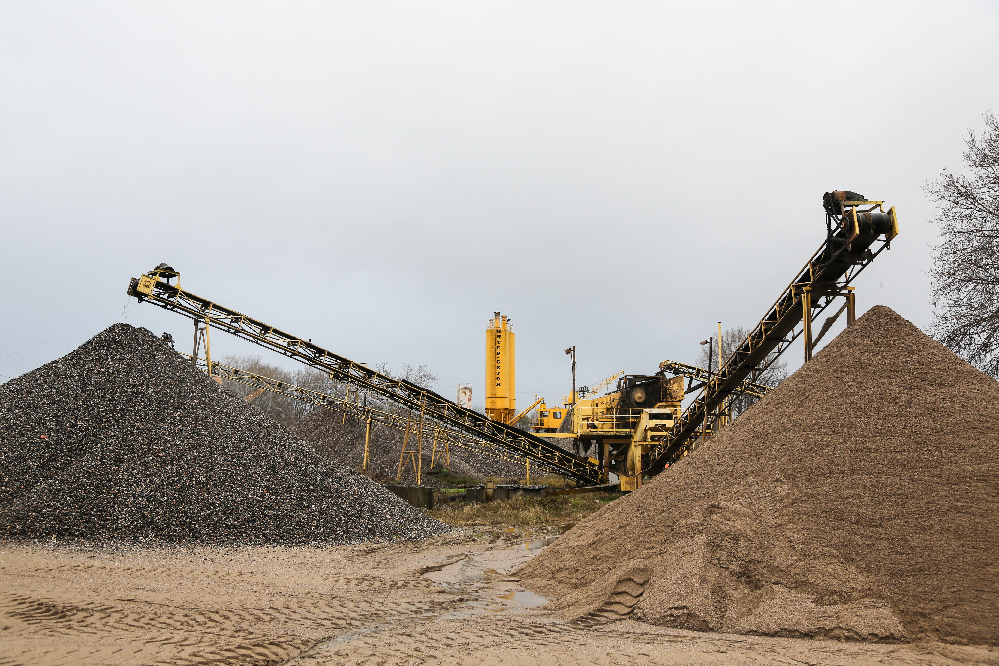
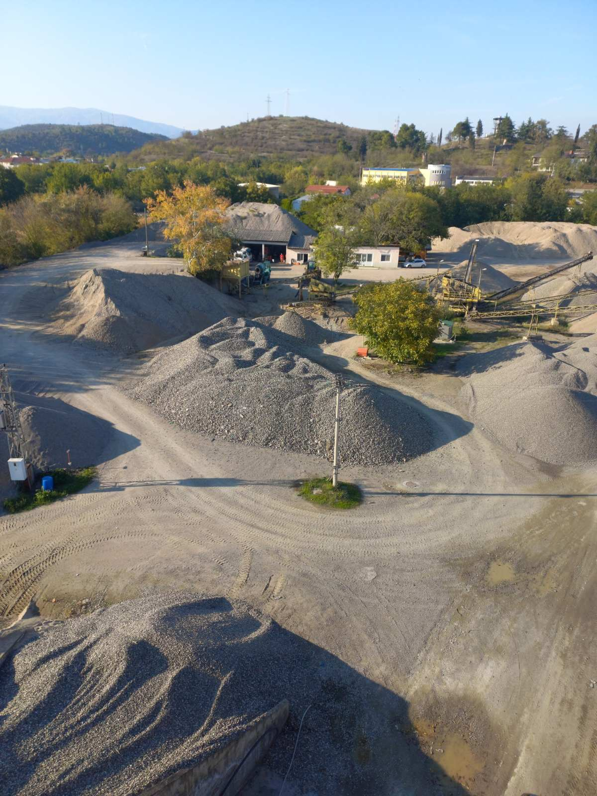
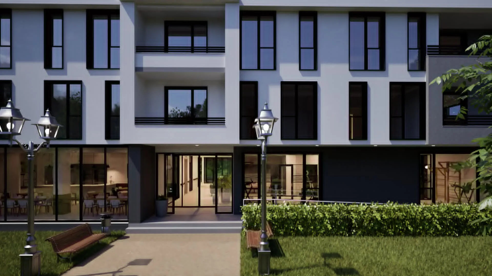
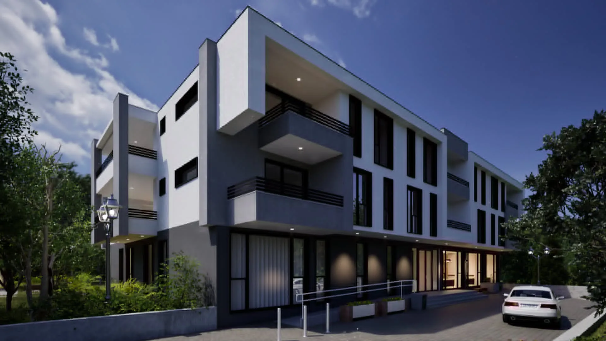
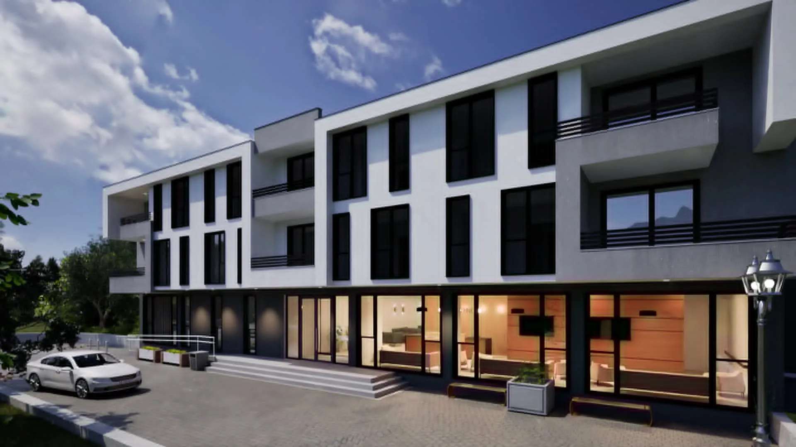

Автопат Смоквица–Гевгелија


Автопатска инфраструктура, општинска инфраструктура, ски-центар Кожуф и придружни објекти — реализирани со стручност и прецизност.
Изградба на инфраструктура на сите автопати, особено на делницата Смоквица–Гевгелија.


Проекти низ општините изведени од ЕУРОИНГ.


Изградба на ски-центарот Кожуф.

















Изградба на современ социјален објект со комфорни услови за сместување, заеднички простории и сите придружни содржини.
Објект за сместување на повозрасни лица, проектиран со капацитет за 56 жители, еднокреветни и двокреветни соби и заеднички простории. Пристапноста, безбедноста и удобноста се во основата на проектот.


